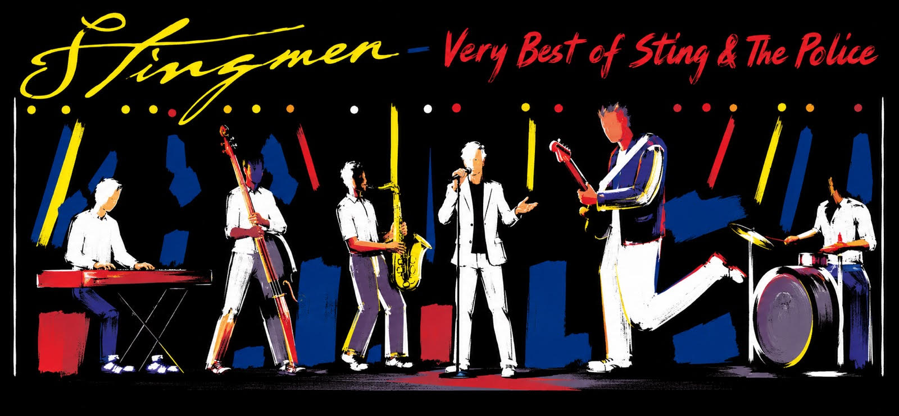

Fotos
Tipp: Weitere Fotos kannst du spaeter im selben Format einfuegen.

Aktuelles aus dem Bandalltag. Inhalte werden aus Markdown geladen.
Vergangene und kommende Auftritte auf einen Blick.
Fotos und Videos von Stingmen.
Tipp: Weitere Fotos kannst du spaeter im selben Format einfuegen.
Live-Sessions und Ausschnitte findest du auf unserem YouTube-Kanal.
Zum KanalStingmen sind nicht nur eine Coverband, sondern eine leidenschaftliche Hommage an die zeitlosen Hits von Sting und The Police. Von "Englishmen in New York" bis "Message in a Bottle" erzeugen wir eine nostalgische Atmosphaere mit modernem Livesound.
Infos fuer Veranstalter und Haustechniker.
Technical Rider und stagebezogene Informationen werden hier zentral gepflegt.
Lade den Rider als PDF in einen Ordner wie assets/tech/ und verlinke ihn hier.
Michael Rolles
Styrumer Str. 43
47138 Duisburg
E-Mail: michael.rolles@gmail.com
Mobil: 01573 8431714
Bitte ersetze diesen Platzhalter durch eine vollstaendige Datenschutzerklaerung, passend zu den verwendeten Diensten (z. B. externe Links, eingebettete Medien, Hosting ueber GitHub Pages).